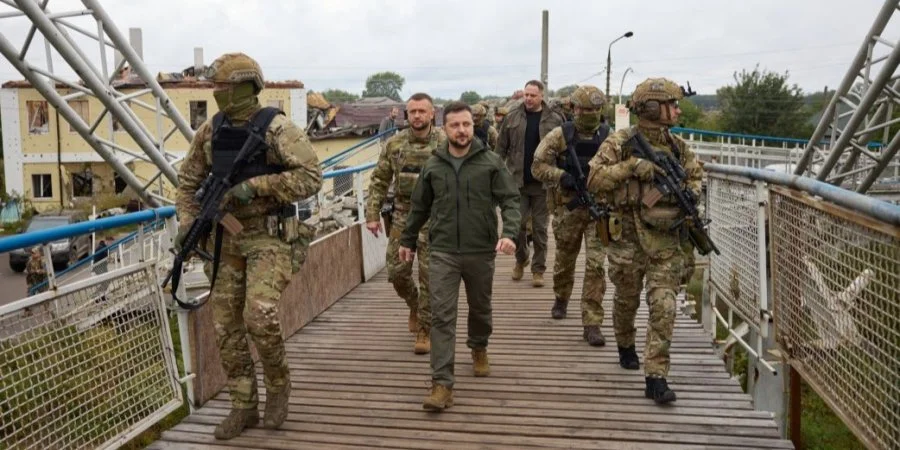

Президент Володимир Зеленський у середу, 14 вересня, відвідав звільнений від російських окупантів Ізюм Харківської області та взяв участь у церемонії підняття державного прапора.
Як повідомляє пресслужба Офісу президента, церемонія відбулася на центральній площі міста в присутності захисників України.
«Раніше, коли ми дивилися вгору, завжди шукали синє небо, сонце. А сьогодні ми, і особливо люди на тимчасово окупованих територіях, дивлячись угору, шукаємо лише одне — прапор нашої держави. Це значить, що герої тут. Це значить, що ворога немає, він утік… Напевне, можна тимчасово окупувати території нашої держави. Але точно неможливо окупувати наш народ, українських людей», — наголосив Зеленський.